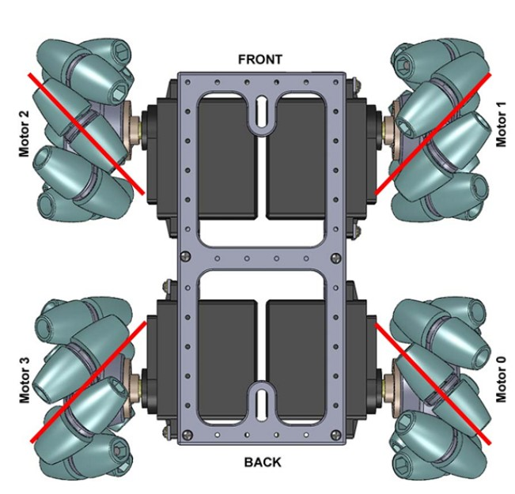
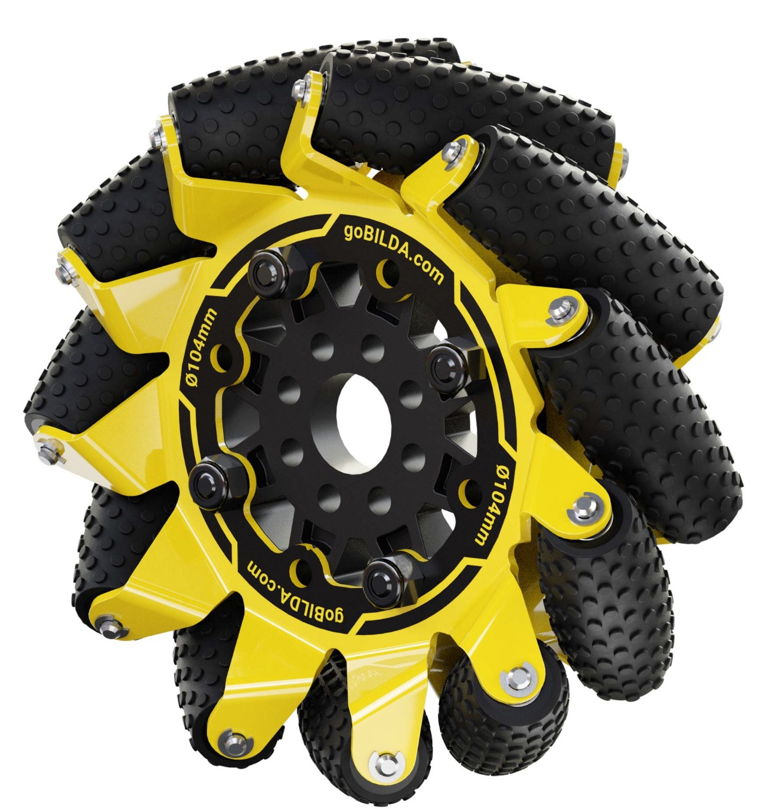
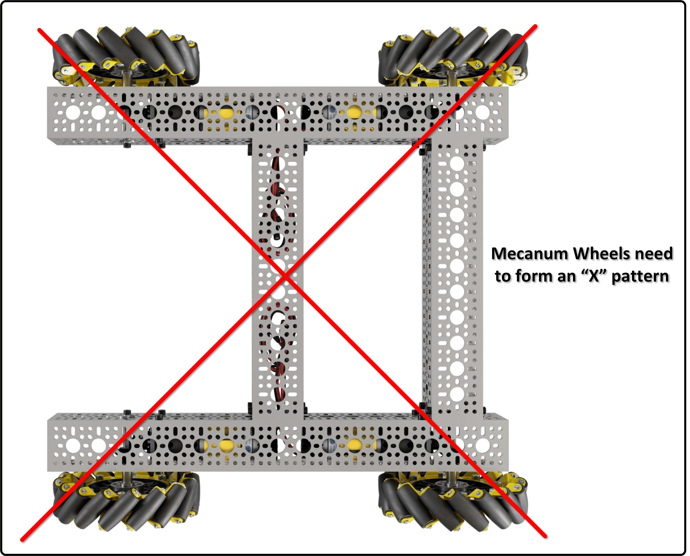
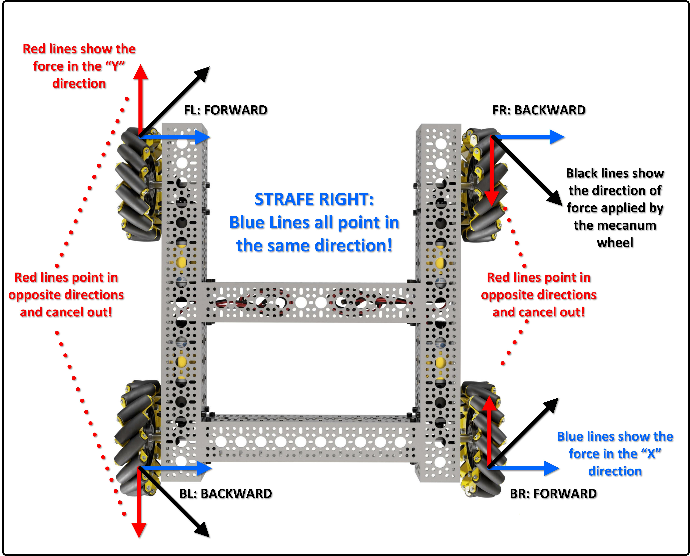

Tank drive got you moving — forward, backward, and spin. But watch the robot carefully: it cannot move sideways. To scoot a few inches left to line up with a target, you have to turn, drive, and turn back. Slow and clumsy. In this lesson you'll replace tank drive with full mecanum drive so the robot can slide in any direction.

Mecanum wheels let a robot move in any direction — forward, backward, sideways, and diagonally — while also rotating, without turning first. That freedom of motion is called a holonomic drivetrain, and it's what most competitive FTC teams use.
A normal wheel can only push the way it rolls. A mecanum wheel has a ring of rubber rollers mounted at a 45-degree angle around the outside. When the wheel spins, those angled rollers let it slide sideways while still pushing forward. That sideways slip is the magic ingredient.

Because each wheel pushes at an angle, the four wheels must be mounted in an X pattern (rollers pointing toward the center). Mounted the wrong way — an O pattern — strafing fails and the robot drives unpredictably.

Strafing means moving straight sideways without rotating. If you spin the four wheels the right way, the forward/backward forces cancel and the sideways forces add up — pure sideways motion.

For a strafe to the right: front-left and back-right spin forward, front-right and back-left spin backward. Strafe left is the exact reverse.

Before the math, watch these two short videos. The first shows why mecanum wheels are so cool in general; the second explains the mechanics the way they matter for an FTC robot. Watch how the angled rollers turn wheel spin into sideways motion.
Video: “The Mecanum Wheel Is So Weird, It Is Genius. How It Works” by Jeremy Fielding.
Video: “The Simple Mechanics of Mecanum Wheels” by Brogan M. Pratt.
Tank drive had two inputs. Mecanum has three:
drive — left stick Y, forward/back.strafe — left stick X, sideways.turn — the triggers, rotation.Each of the four motors gets its own power by adding the three components with a specific sign pattern:
frontLeft = strafe + drive + turn
backLeft = -strafe + drive + turn
frontRight = -strafe + drive - turn
backRight = strafe + drive - turndrive is + on every wheel (all spin forward together). strafe
alternates sign to make the diagonal pattern. turn is + on the left, -
on the right — exactly like tank spin.
Quick check — push straight up (drive=1, others 0): every wheel gets
+1, robot drives straight. Push right (strafe=1): FL and BR go forward, FR and BL go
backward — a strafe. Squeeze the right trigger (turn=1): left side forward, right side
backward — a spin. The formula combines all three at once.
Push up and right at the same time (drive=0.7, strafe=0.7): the front-left
power comes out to 1.4. But a motor only accepts -1.0 to 1.0 — send
1.4 and it gets clamped, wrecking the ratios between wheels.
After computing all four powers, find the largest absolute value. If it's over 1.0, divide
all four by that value. Everything scales down together, so the direction is preserved and nothing
exceeds the valid range.
Time to code. Open MecanumDrive.java and jump to your tank-drive code inside the loop:
Drive : Loop
Delete your tank-drive lines (the drive/spin/leftPower/
rightPower block and its four setPower calls) and type this mecanum code in their
place. The motor setup in INIT stays exactly as it is — mecanum uses the same four motors.
double drive = -gamepad1.left_stick_y;
double strafe = gamepad1.left_stick_x;
double turn = gamepad1.right_trigger - gamepad1.left_trigger;
double powFL = strafe + drive + turn;
double powBL = -strafe + drive + turn;
double powFR = -strafe + drive - turn;
double powBR = strafe + drive - turn;
double max = Math.max(Math.abs(powFL), Math.abs(powBL));
max = Math.max(max, Math.abs(powFR));
max = Math.max(max, Math.abs(powBR));
if (max > 1.0) {
powFL /= max;
powBL /= max;
powFR /= max;
powBR /= max;
}
frontLeft.setPower(powFL);
backLeft.setPower(powBL);
frontRight.setPower(powFR);
backRight.setPower(powBR);The turn line uses the triggers: right trigger rotates clockwise (positive),
left trigger counter-clockwise (negative). Triggers are analog (0.0 to 1.0), so a
light squeeze gives a gentle spin — the same layout the competition code uses.
If strafing spins the robot instead of sliding it, double-check the signs on strafe in the
four pow lines — they must alternate + − − + (FL, BL, FR, BR). If
the robot pulls to one side when driving straight, the wheels may be in an O pattern instead of an X.
Reading inputs, four power formulas, a normalization block, four setPower calls — that's
a lot of driving code stuffed into the middle of your OpMode, and it will only grow. Wouldn't it be nice to
replace all of it with a single line like drive(...)? Hold that thought — in Lesson 9
you'll move this whole mess into its own Drivebase class and call it in one line.